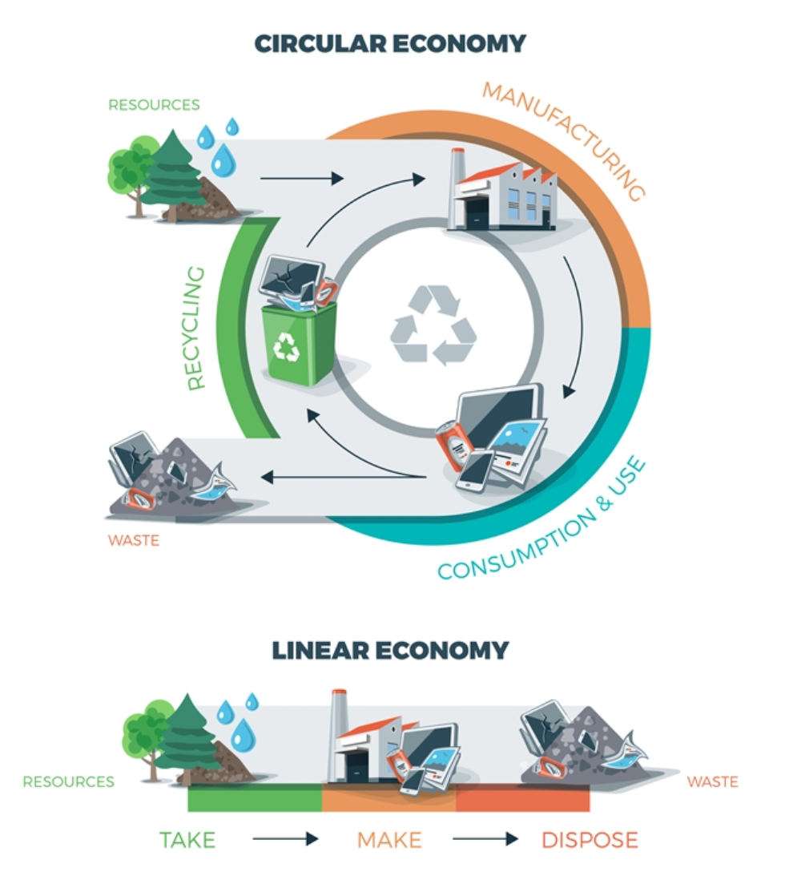

-
減少溫室氣體排放
回收有助推動循環經濟模式，讓金屬、塑膠及玻璃等有價值物料得以回收並重新利用。請選擇以下選項，了解每個處理流程如何減少溫室氣體排放，並為地球帶來裨益：
減少使用原生材料 → 降低開採時的能源消耗 = 減少溫室氣體排放
- 在生產過程中使用再生物料
-
可持續循環經濟
- 透過選用、創造及銷售循環產品，實踐可持續發展理念
(圖片只供英文版本)
循環經濟 是一種新興商業模式，其核心原則在於：- 減少廢棄物產生
- 最大化物料使用週期
- 降低環境影響
採用循環經濟模式可帶來以下效益：- 減少原材料需求
- 獲取再生物料產品認證
- 提供更環保的產品選擇
.png) 四電一腦 智碳平台
四電一腦 智碳平台E-waste Smart Carbon Platform EN / 中